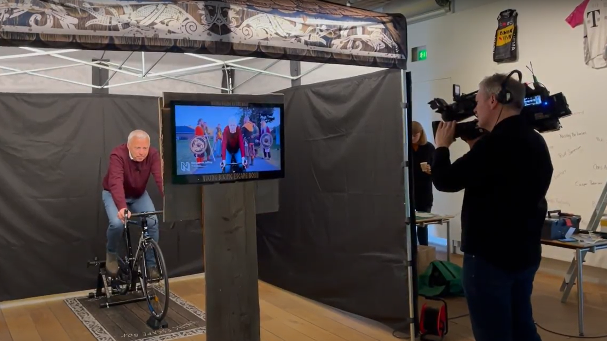
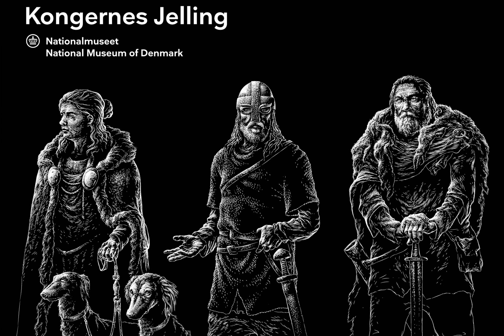
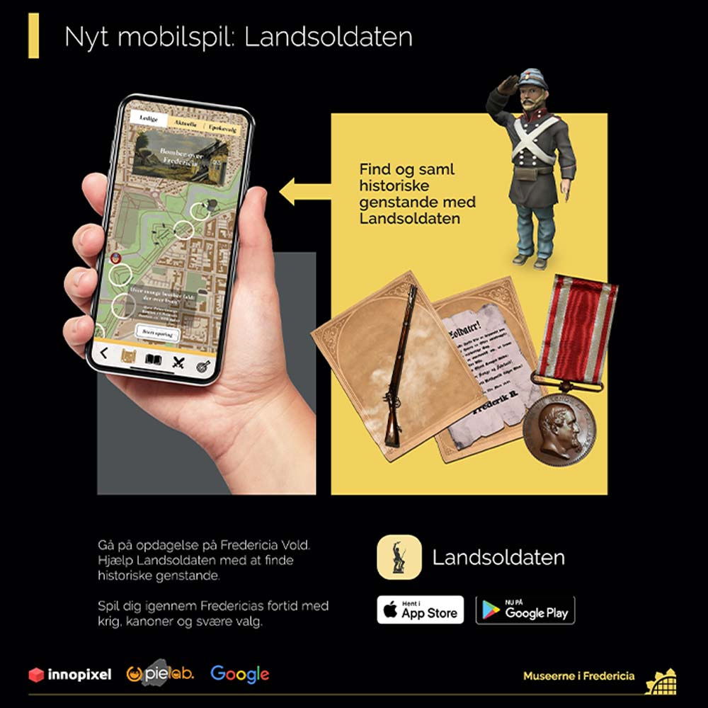
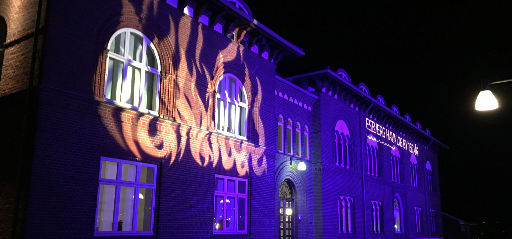
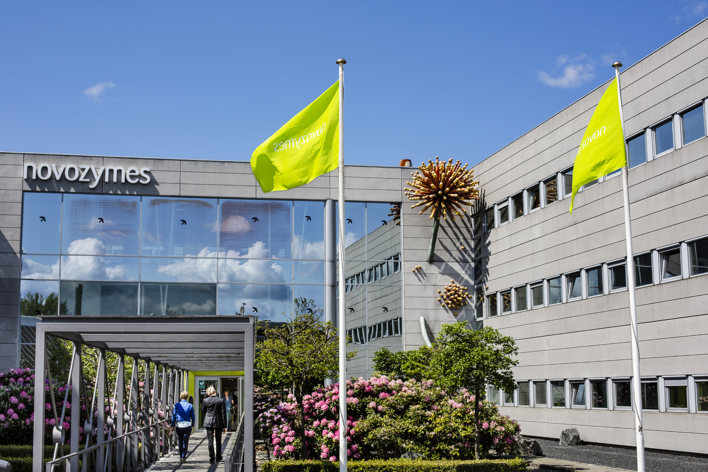
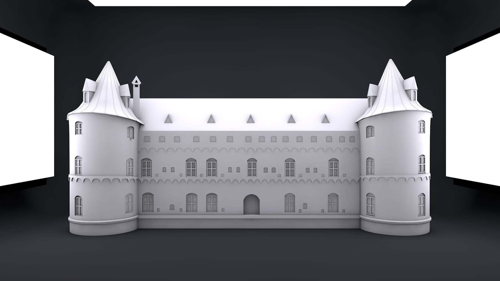
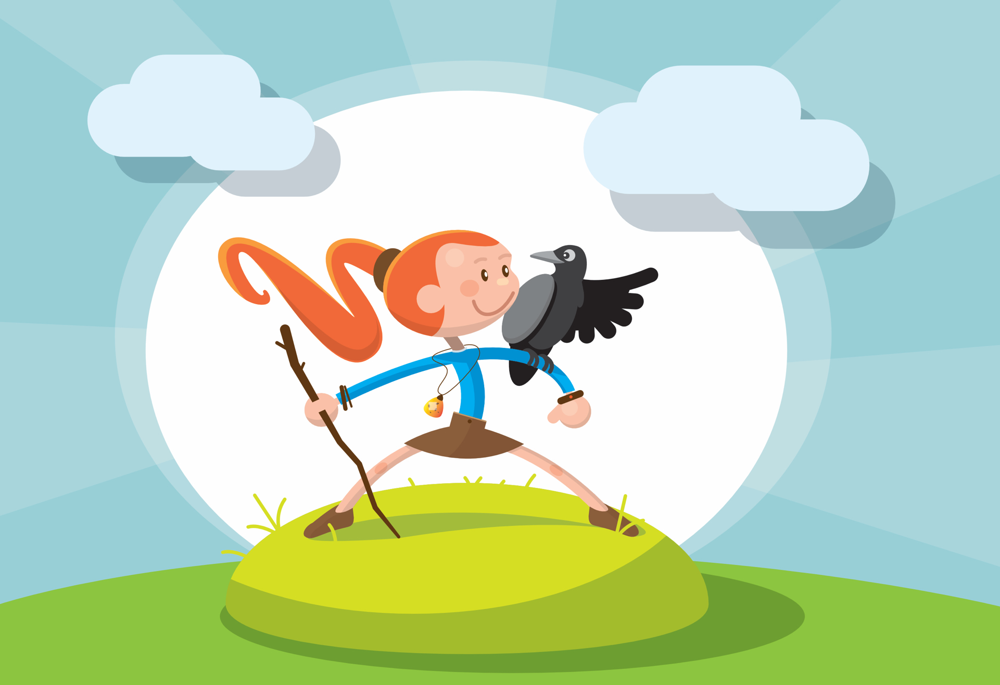

Naturpark Lillebælt AR
Underwater learning app developed to engage school children with the local marine ecosystem at the harbor docks.

Sensible - XR Turbine Maintenance
Advanced Microsoft HoloLens 2 diagnostics app overlays maintenance guides directly on turbine gears.

Veterandykkerne - Havets Helte
Immersive 3D historical diver simulation designed as an interactive museum exhibit.

ErhvervsTanken - NFC Display
Tangible exhibition table using 3D printed tokens and NFC hardware sensors to teach vocational skills.

Lillebælt VR Ecosystem Game
Educational VR sandbox game placing students as marine biologists restoring damaged coastal reefs.

InnovationCamp 2022 - Jelling
Virtual collaborative museum gallery in SynergyXR allowing classrooms to explore the Jelling runic stones.

Viking Escape Box
Interactive Tour de France Viking exhibition combining stationary bikes and physical puzzle boxes.

Gorm the Old AI Prototype
3D character prototyping of King Gorm the Old using AI dialogue and live motion capture.

Landsoldaten App
An interactive location-based AR game tour around Fredericia's 17th-century ramparts.

Museum Deepfake Portraits
AI deepfake portraits bringing historical figures to life on vertical disguised screens.

Esbjerg Port 150 Years Show
Large-scale window projection mapping show celebrating the port's 150-year anniversary.

Novozymes 360° VR Tour
Stereoscopic 4K VR tour of Novozymes' Kalundborg facility for remote sales and training.

Egeskov Castle 3D Mapping
Stunning 3D projection mapping show on Egeskov Castle celebrating its history through time.

Red Ink - The Girl & The Raven
Analog booklet enhanced by 3D AR animations telling a story of local tourist sights.
Let's craft your next digital experience.
Whether you need complex Unity development, interactive web designs, or physical smart table installations, we'd love to help you build it.
Discuss Your Case